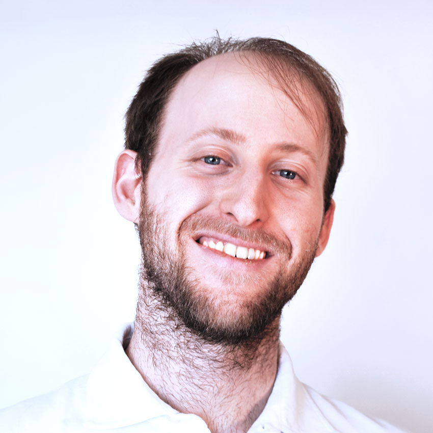

Lorenzo Ranghiasci
Hi, I'm Lorenzo Ranghiasci, an Architect and BIM Coordinator based in Italy
with a strong passion for programming. My purpose is design and build
beautiful and functional things...both digitally and in the real world.
Bio & Experience
-
1988
Born in Rome, Italy
-
2015
Complete master degree program of Architecture in University of Rome "La Sapienza"
-
2015
Architectural Bim Specialist at Bimon
-
2017
Bim Coordinator at Reactstudio
-
2018
ICMQ Certified Bim Coordinator
-
2021
Certified Fire Safety Engineer from Italian Nation Fire Brigade (Corpo Nazionale dei Vigili Del Fuoco)